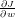
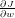

Consider a cost function J(θ) defined to be the error (i.e. the difference between the expected and the actual output), where θ is the parameters of the neural network (weights, biases etc).
During training, training data is input into the neural network, and then the output is compared with the expected output. We then use J to determine the error of each output neuron in the last layer (output layer) of the neural network. Once this error has been calculated we can also calculate the error of the previous layer as we have the error associated with each node and the weight of each arc to that node. This can be repeated for each layer of neurons in the network and so the error is ”back-propagated” through the network.
We then have an error term for each neuron, and a weight for each input into that neuron, so we can then compute the partial derivative  where w is the weight of the output arc from that particular node. This allows for the computation of the gradient of the cost function J, which is then allows the optimisation method (such as gradient descent, which will be discussed later on) to update the weight w for that output arc [1].
Note that in order to work out , J must be differentiable, hence the activation function must also be differentiable [2].
[1] Nielson M. How the backpropagation algorithm works;. Available from: http://neuralnetworksanddeeplearning.com/chap2.html.
[2] Rojas R. The Backpropagation Algorithm;. Available from: https://page.mi.fu-_berlin.de/rojas/neural/chapter/K7.pdf.